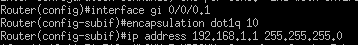
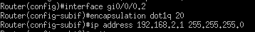
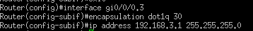
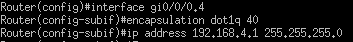
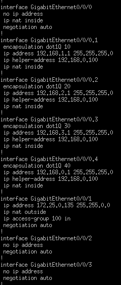
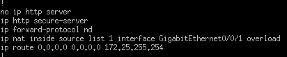
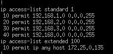

Configuration des vlans
On commence par configurer les sous interfaces sur le routeur pour permettre au différente Vlan de communiquer entre elles.
Pour la configuration on utilise deux commandes seulement :
- La première : encapsulation dot1q XX permet aux routeurs d’interagir correctement avec les Vlan (XX représente le numéro de la vlan)
- La seconde : ip address 192.168.0.X 255.255.255.0 permet d’ajouter une passerelle qui correspond avec chaque de nos Vlan.
- - - - - - - - - - - - - - - - - - - - - - - - - - - - - - - - - - - - - - - - - - - - - - - - - - - - - - - - - - - - - - - - - - - - - - - - - - - - - - - - - - - - - - - - - - - - - - - - - - - - - - - - - - - -
Ajout du Vlan 10 sur interface gi0/0/0.1
- - - - - - - - - - - - - - - - - - - - - - - - - - - - - - - - - - - - - - - - - - - - - - - - - - - - - - - - - - - - - - - - - - - - - - - - - - - - - - - - - - - - - - - - - - - - - - - - - - - - - - - - - - - -
Ajout du Vlan 20 sur interface gi0/0/0.2
- - - - - - - - - - - - - - - - - - - - - - - - - - - - - - - - - - - - - - - - - - - - - - - - - - - - - - - - - - - - - - - - - - - - - - - - - - - - - - - - - - - - - - - - - - - - - - - - - - - - - - - - - - - -
Ajout du Vlan 30 sur interface gi0/0/0.3
- - - - - - - - - - - - - - - - - - - - - - - - - - - - - - - - - - - - - - - - - - - - - - - - - - - - - - - - - - - - - - - - - - - - - - - - - - - - - - - - - - - - - - - - - - - - - - - - - - - - - - - - - - - -
Ajout du Vlan 40 sur interface gi0/0/0.4
Configuration du DHCP
On veut ensuite que notre DHCP puisse attribuer les adresses à tous nos Vlan. Pour cela, on utilise le relai DHCP avec la commande :
ip helper-address 192.168.0.100
Cette commande permet au routeur de rediriger nos requêtes DHCP vers l’adresse 192.168.0.100 qui est l’adresse de notre serveur DHCP.
Configuration du NAT
Ensuite, on cherche à configurer le NAT pour permettre à tous nos clients de se connecter à Internet.
Pour cela, on doit tout d’abord configurer les sous-interfaces avec la commande :
ip nat inside
Elle permet aux sous interfaces de communiquer avec l’extérieur de notre réseau.
Ensuite, on configure sur l’interface gi0/0/1 le Nat pour qu’on puisse sortir du réseau avec la commande :
ip nat outside
Ensuite, on configure la passerelle par défaut de l’Iut pour pouvoir accéder à internet. Pour cela, on utilise la commande :
ip route 0.0.0.0 0.0.0.0 172.25.255.254
Enfin on ajoute la commande suivante :
Ip nat inside source list 1 interface gigabitEthernet0/0/1 overload
Elle permet à plusieurs appareils d’un réseau privé d’accéder à Internet en partageant l’IP publique de l’interface GigabitEthernet0/0/1, grâce au NAT avec surcharge (PAT).
Configuration des ACL
Pour que le Nat fonctionne, on doit mettre en place deux ACL.
Voici la première ACL configurée:
ip access-list standard 1
10 permit 192.168.1.0 0.0.0.255
20 permit 192.168.2.0 0.0.0.255
30 permit 192.168.3.0 0.0.0.255
40 permit 192.168.0.0 0.0.0.255
Cette première ACL permet de laisser passer les requêtes venant des quatre Vlan. Elle permet aussi de filtrer le trafic en fonction de ces adresses IP.
Voici la seconde ACL configurée :
ip access-list extended 100
10 permit ip any host 172.25.0.135
Cette ACL autorise tout trafic provenant de n’importe quelle source vers l’hôte 172.25.0.135.
Redirection des requêtes SSH
Pour permettre les connexion DHCP depuis un réseau externe dans le réseau de l’entreprise, on doit ajouter une commande :
Ip nat inside source static tcp 192.168.0.100 22 interface gi0/0/1 2222
Cette commande nous permet de se connecter en distance avec ssh.
Dans la commande on lui demande rediriger les demandes ssh qui arrive sur le port 2222 vers le port 22 de notre server.
Configuration Globale
Configuration des interfaces
 Configuration des ACL
